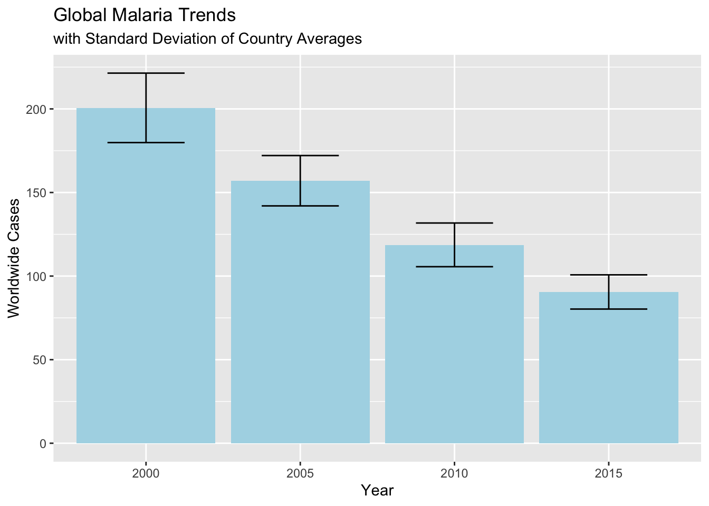
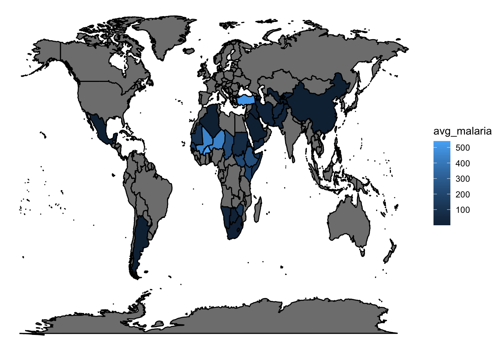
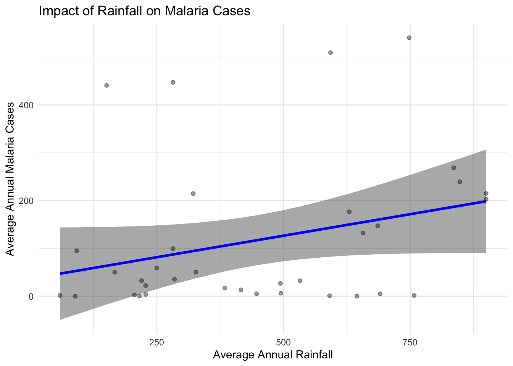

library(tidyverse)
library(here)
library(rvest)
library(broom)
library(modelr)
# Grabbing data
malaria_untidy <- readr::read_csv('/Users/jaxlub/Documents/GitHub/DATA334Spring24-DataVisualization/data/malaria_inc.csv')
malaria_df <- malaria_untidy |> rename(Cases = `Incidence of malaria (per 1,000 population at risk) (per 1,000 population at risk)`)Malaria is a pathogon carried by mosquitoes and has killed millions of humans over the course of human history. Using a Malaria Dataset from Tidy Tuesday I will investigate global trends in Malaria occurrences and location through the last 20 years. In addition I will use a Rainfall dataset to see if there is a relationship between annual rainfall and Malaria cases. Mosquitoes are highly dependent on water in their early stages of life and is critical for development so rainfall could be a major predictor in Malaria cases. Using these data sets I will explore how annual rainfall and Malaria cases are related.
Data Tidying and Exploration
url <- "https://en.wikipedia.org/wiki/List_of_countries_by_average_annual_precipitation"
h <- read_html(url)
tab <- h |> html_nodes("table")
rainfall_untidy <- tab[[1]] |> html_table()
rainfall_df <- rainfall_untidy |> select(Country, `mm/year)`, Continent) |> rename("MMannual" = `mm/year)`)
full_df <- left_join(malaria_df, rainfall_df, by = join_by("Entity" == "Country"))
full_df <- full_df |> mutate(MMannual = if_else(is.na(MMannual),
true = "0", false = MMannual))
full_df$MMannual<- as.numeric(full_df$MMannual)
malaria_trend <- full_df |>
group_by(Year) |>
summarise(avg = mean(Cases), total = n(), stdev = sd(Cases)) |>
mutate(se = stdev / sqrt(total),
lb_se = avg - se,
ub_se = avg + se)
ggplot(data = malaria_trend, aes(x = as.factor(Year), y = avg)) +
geom_col(fill = "lightblue") +
geom_errorbar(aes( ymin = lb_se, ymax = ub_se), width = .5, color = "black") +
labs(x = "Year",
y = "Worldwide Cases",
title = "Global Malaria Trends",
subtitle = "with Standard Deviation of Country Averages")
As we can see since 2000 global Malaria cases has been on the decline.
avg <- full_df |> group_by(Entity) |> summarise(avg_malaria = mean(Cases), avg_rain = mean(MMannual)) |> filter(avg_rain != 0)
world_df <- ggplot2::map_data("world")
full <- left_join(world_df, avg, by = join_by("region" == "Entity"))
ggplot(data = full, mapping = aes(x = long, y = lat, group = group)) +
geom_polygon(colour = "black", aes(fill = avg_malaria)) +
theme_void()
The majority of Malaria cases are found in Africa through the Middle East and China with a handful of cases in Central and South America.
malaria.lm <- lm(avg_malaria ~ avg_rain, data = avg)
grid <- full_df |> data_grid(Cases = seq_range(Cases, n = 6))
aug_df <- augment(malaria.lm, newdata = avg,
interval = "confidence")
## summary(malaria.lm) for the adj r-sqred
ggplot(data = avg, aes(x = avg_rain, y = avg_malaria)) +
geom_ribbon(data = aug_df, aes(y = .fitted, ymin = .lower, ymax = .upper), alpha = 0.4) +
geom_point(alpha = 0.4) +
geom_line(data = aug_df, aes(x = avg_rain, y = .fitted), colour = "blue", linewidth = 1.2)+
theme_minimal() +
labs(x = "Average Annual Rainfall",
y = "Average Annual Malaria Cases",
title = "Impact of Rainfall on Malaria Cases")
Through this visual we can see that there is a positive relationship between Annual Rainfall and Malaria Cases. As rainfall increases so too does Malaria cases. The individual points are also plotted in the background to show distribution of and number of cases in sample.
Flaws
This data set is not as comprehensive as I would have liked and does not have many data points for many other regions of the world. Because of this trying to build a model using incomplete data does not lead to very strong models. This model has an adjusted R squared value of 5.7% which is decent but not extremely strong. Furthermore I wish the rainfall data set had more data by year and not just an average for each Country. With data by year it would be much more beneficial for determining trends between rain and total cases. These three visuals are all strong communicators of important data. In the first visual, distribution can be seen via error bars and averages can also be seen. In the world visual the location of all Malaria hot spots is easily apparent. In the last visual our model is clear in relation to our actual data showing both our model, the number of samples we used, and their distribution.